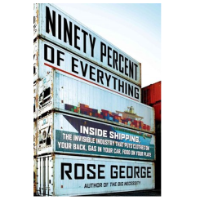

Michelle Gaubert (MGaubert) / 2013-08-30 10:47 AM 2013-09-30 08:12 AM
“Almost 90 percent of everything we buy arrives
via ship”, writes Rose George, author of the book, Ninety Percent of Everything. The book focuses on her
month-long journey aboard a Maersk Line container ship, exploring the modern shipping industry. It’s
interesting to take a step back from our daily work in the trenches to see how George is portraying
this industry to the general public.
In a recent interview with NPR, George shares her adventures sailing through the North Atlantic. In the book, George discusses how during her voyage, she realized how ironic it is that the shipping industry is one of the most important businesses in order for the world to function properly, however not many people know anything about it.
George writes, "These ships and boxes belong to a business that feeds, clothes, warms and supplies us. They have fueled, if not created, globalization. They are the reason behind your cheap t-shirt and reasonably priced television. But who looks behind a television now and sees the ship that brought it? Who cares about the men who steered your breakfast cereal through winter storms? How ironic that the more ships have grown in size and consequence, the less space they take up in our imagination."
The shipping industry is not only one of our most important industries - vital to the success of the global supply chain - but also, one of the most taxing careers to work in. Involvement in this type of market requires deep knowledge, patience and dedication. For those who live and breathe marine shipping day-in and day-out, George’s book gives the industry the attention it deserves.
I hope you have the chance to listen to the interview and to let us know what you think of how George
has portrayed the shipping industry. How would you break down our industry to someone that’s not involved?